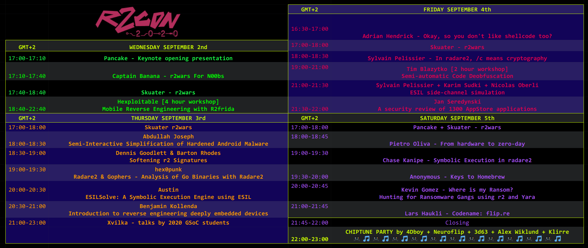
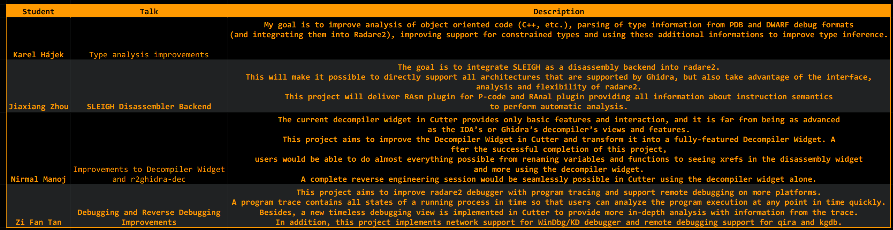

.-[ɹ◁◁]-------------------. Buy merch dropping a mail to info@camisetasfrikis.es www.camisetasfrikis.es/31-radare
| ___ ___ ___ ___ _ _ |_____________________________________________________________
| | _ \(__ \ _| | \| | | |
| | (/ __/ (_, 0 | | | When: 4 days in September (from 2020-09-02 to 2020-09-05) |
| |_\__|___|___|___|_|\_| | Schedule: Talks available in PDF ICS Google web (GMT+2) |
| ____ ___ ____ ___ | Ticket Price: $0 :D |
| (__ \/ \(__ \/ \ | CFP: Closed |
| / __/ 0 / __/ 0 | | Anouncements: Twitter, Telegram |
| |____|\___/|____|\___/ | Contact us via mail, Telegram |
| | Party: Chiptune concert and virtual beers |
`---.---------------------' |
_ | |
|_|-+--[ CONFERENCE ]-------------------------------------------------------------------(
| |
| Thanks to the COVID19 global pandemic we decided to make the conference online. |
| Where youtube.com/c/r2con |
| |
| r2con is the annual conference about radare2 |
| The conference aims to gather all the r2 users and developers around the world to |
| enjoy a 4 day event full of experiments, hacking, teaching, discussing and coding |
| stuff while having fun and drinking beers (safely at home). |
| |
| Since this year #r2con2020 is online there's no venue restriction, |
| therefore there's no need to sign up for Hexploitable's or Tim's workshops!! |
| |
_ | |
|_|-+--[ COMPETITIONS ]-----------------------------------------------------------------(
| |
| As we did in previous editions we will be holding them, but in remote, and prizes |
| for the winners will be sent to their homes directly for free. (see below) |
| |
| * r2wars - the codewars-style assembly game on top of r2 |
| * Hackathon - fix bugs and implement things in r2 |
| * CTF - capture the flag reversing challenges to solve with r2 |
| * GSoC - Google Summer of Code 2020 |
| * Contributors - Conference contributors |
_ | |
`-----------------------------------------------------------------------------------'

@as0ler @enovella_ @hexploitable Semi-automatic Code Deobfuscation @mr_phrazer GSoC 2020 mentors Anton Kochkov Florian Märkl kazarmy karliss deroad Itay Cohen yossizap GSoC 2020 students Debugger improvements @abc_sup SLEIGH Disassembler Backend Jiaxiang Zhou Type analysis improvements @h0un6 Decompiler Widget and r2ghidra-dec @nirmalmanoj_c Capture The Flag Alex Soler Eduardo Novella Mario Vilas Tony Torralba Eloi Sanfelix Gautam Grant Douglas Roberto r2wars Tournament @skuater @pancake r2wars super cute logo & talk for n00bs @CaptBanana Chiptune artists Delivering live music to your ears made with <3, GameBoys, C64 and amiga computers @neuroflip @0x3D63 @Klirre8bit @the4Dboy @alexwiklund
Schedule
Chiptune
Saturday night (GMT+2), we will close the conference with a chiptune concert! Big thank you to the 5 marvellous chiptune artists that will be performing live for all of us! @alexwiklund Makes music for video games from Sweden. Check out his music here https://alexwiklund.bandcamp.com/album/decade and his insta here https://instagram.com/wiklundmusic @the4Dboy Writes electronic music with GameBoy & Electronic devices, check his music here https://the4dboy.bandcamp.com/album/think-doubt-feel-flow-vol-1 and his insta here https://instagram.com/the4dboy @Klirre8bit Klirre makes music on his Gameboy using solely Nanoloop 1. Check his music here https://klirre.bandcamp.com/album/crush and his instagram here https://instagram.com/mariohamborg @0x3D63 Composer and sound designer specialized in Post-Cyberpunk music. Check her fantastic chiptune music here https://3d63.bandcamp.com/album/electric-pawer and her instagram here https://instagram.com/0x3d63 @neuroflip Has been producing trackered music since the 90's with C64 and Amiga computers. Check his music aswesome music here https://neuroflip.bandcamp.com/album/robot-gang and his instagram here https://instagram.com/neuroflip
r2wars
Join the telegram channel here to contact with skuater and upload your bot for the competition! - Training rounds are held Wednesday, Thursday & Friday at 17:00 GMT+2 - Knockout final round is Saturday at 17:00 GMT+2 - There will be prizes for 3 contestants. - All winners will be disclosed during the closing talk of the con This game is inspired by CoreWar, but running on top of radare2's ESIL emulation. To win please submit your bots written in assembly (this time we will accept x86-32, arm64, arm32, mips) which will run in the same memory space trying to make the other bot crash by corrupting their memory. To learn more check out the following links: * https://github.com/radareorg/r2wars * https://www.youtube.com/results?search_query=r2wars * https://github.com/radare/radare2/labels/r2warsHackathon
This competition consists in fixing as much issues as possible of the ones labelled as "hackathon" in the radare repository & the cutter repository. For new people that wants to participate in the Hackathon we suggest to check the issues labelled with `good first issue`: * 1st issue radare2 * 1st issue cutter To participate in the radare2CON 2020 hackathon use the labels: * radare2 hackaton label * cutter hackaton labelCTF
- The registration Thursday Sep 3rd at night (GMT+2) << check twitter for moar news under #r2con2020 #ctf ctf.radare.org - Individual CTF. - All level challenges basic, intermediate & difficult. - The CTF at r2con is about reversing. You may encounter crypto, mobile and others but always related to reversing - Using cutter to capture the flags is allowed. - All challenges are solvable without connecting to the server. - All challenges should be solved using radare2, a write up will be requested! - The CTF will be closed the last day of r2con2020, Sep 5th. - There will be prizes for the 3 highest scores. - All winners will be disclosed during the closing talk of the con Join the telegram channel here The R2Con CTF is a Jeopardy CaptureTheFlag style competition that must be solved with r2. You are given several questions, tasks & challenges related to different categories of RE which may be solved using radare2. Players get points by solving them. Using hints to solve the challenges lowers the score.GSoC
This is the 7th Summer Of Code competition of radare2, this time we got accepted by Google in the GSoC, which allows us to bring the oportunity to some students to learn more about C, reverse engineering and r2 itself thanks to our mentoring. To learn more about it checkout this link: https://www.radare.org/gsoc/2020 The selected students will be presenting their work at the end of summer during the r2con. Conference contributors
Speakers Keynote presentation @trufae r2war for n00bs @CaptnBanana r2wars tournament @sanguinawer Semi-Interactive Simplification of Hardened Android Malware @malwarecheese Softening r2 Signatures @bemodtwz @bmorphism Radare2 & Gophers - analysis of Go binaries with r2 hex0punk https://github.com/hex0punk ESILSolve: a symbolic execution engine using ESIL @alkalinesec Introduction to reverse engineering deeply embedded devices Benjamin Okay, so you don't like shellcode too? @malwaremustd1e In radare2, /c means cryptography @Pelissier_S ESIL side-channel simulation @Pelissier_S @_Az0x_ @Baldanos A security review of 1,300 AppStore applications @janseredynski From hardware to zero-day @0xsysenter Symbolic Execution in radare2 Chase Kanipe Where is my ransom? Hunting for ransomware gangs using r2 and Yara @kgbuquerin Codename: flip.re @zutle Workshop trainers Mobile Reverse Engineerings with R2frida (https://github.com/nowsecure/r2frida)@as0ler @enovella_ @hexploitable Semi-automatic Code Deobfuscation @mr_phrazer GSoC 2020 mentors Anton Kochkov Florian Märkl kazarmy karliss deroad Itay Cohen yossizap GSoC 2020 students Debugger improvements @abc_sup SLEIGH Disassembler Backend Jiaxiang Zhou Type analysis improvements @h0un6 Decompiler Widget and r2ghidra-dec @nirmalmanoj_c Capture The Flag Alex Soler Eduardo Novella Mario Vilas Tony Torralba Eloi Sanfelix Gautam Grant Douglas Roberto r2wars Tournament @skuater @pancake r2wars super cute logo & talk for n00bs @CaptBanana Chiptune artists Delivering live music to your ears made with <3, GameBoys, C64 and amiga computers @neuroflip @0x3D63 @Klirre8bit @the4Dboy @alexwiklund